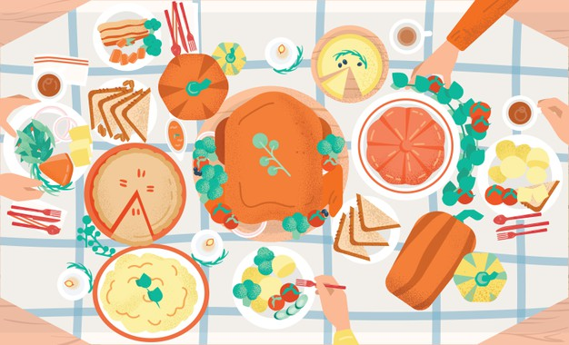
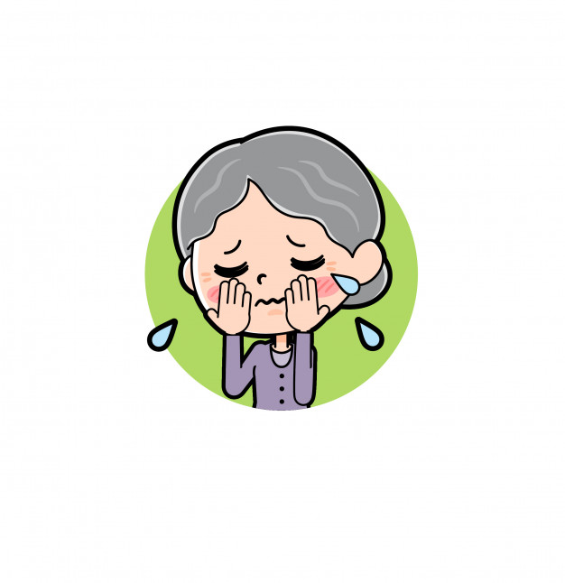
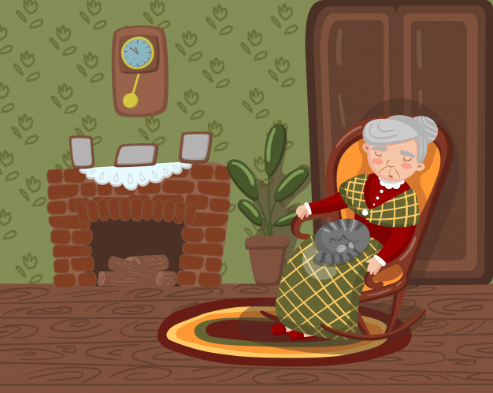

Para disfrutar de tu lectura dale click sobre los capítulos, para salir del contenido da doble click.
- Capítulo 1

Érase una viejecita
Sin nadita que comer
Sino carnes, frutas, dulces,
Tortas, huevos, pan y pez.
Bebía caldo, chocolate, Leche, vino, té y café,
Y la pobre no encontraba
Qué comer ni qué beber. - Capitulo 2
Y esta vieja no tenía
Ni un ranchito en que vivir
Fuera de una casa grande
Con su huerta y su jardín. - Capitulo 3
Nadie, nadie la cuidaba
Sino Andrés y Juan y Gil
Y ocho criados y dos pajes
De librea y corbatín - Capitulo 4
Nunca tuvo en qué sentarse
Sino sillas y sofás
Con banquitos y cojines
Y resorte al espaldar. - Capitulo 5
Ni otra cama que una grande
Más dorada que un altar,
Con colchón de blanda pluma,
Mucha seda y mucho olán. - Capitulo 6
Y esta pobre viejecita
Cada año, hasta su fin,
Tuvo un año más de vieja
Y uno menos que vivir - Capitulo 7

Y al mirarse en el espejo
La espantaba siempre allí
Otra vieja de antiparras,
Papalina y peluquín. - Capitulo 8
Y esta pobre viejecita
No tenía que vestir
Sino trajes de mil cortes
Y de telas mil y mil.
Y a no ser por sus zapatos,
Chanclas, botas y escarpín,
Descalcita por el suelo
Anduviera la infeliz. - Capitulo 9
Apetito nunca tuvo
Acabando de comer,
Ni gozó salud completa
Cuando no se hallaba bien
Se murió del mal de arrugas,
Ya encorvada como un tres,
Y jamás volvió a quejarse
Ni de hambre ni de sed.
Y esta pobre viejecita - Capitulo 10

Al morir no dejó más
Que onzas, joyas, tierras, casas,
Ocho gatos y un turpial.
Duerma en paz, y Dios permita
Que logremos disfrutar
Las pobrezas de esa pobre
Y morir del mismo mal.